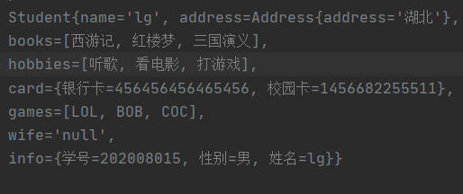
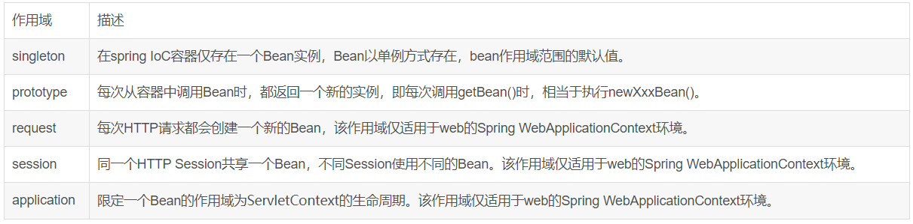

Dependency injection
概念
- 依赖注入（Dependency Injection,DI）。
- 依赖 : 指Bean对象的创建依赖于容器 . Bean对象的依赖资源 .
- 注入 : 指Bean对象所依赖的资源 , 由容器来设置和装配 .
Set注入（重点）
要求被注入的属性 , 必须有set方法 , set方法的方法名由set + 属性首字母大写 , 如果属性是boolean类型 , 没有set方法 , 是 is .
测试pojo类 :
Address.java
public class Address {
private String address;
public String getAddress() {
return address;
}
public void setAddress(String address) {
this.address = address;
}
}
Student.java
import java.util.List;
import java.util.Map;
import java.util.Properties;
import java.util.Set;
public class Student {
private String name;
private Address address;
private String[] books;
private List<String> hobbys;
private Map<String,String> card;
private Set<String> games;
private String wife;
private Properties info;
public void setName(String name) {
this.name = name;
}
public void setAddress(Address address) {
this.address = address;
}
public void setBooks(String[] books) {
this.books = books;
}
public void setHobbys(List<String> hobbys) {
this.hobbys = hobbys;
}
public void setCard(Map<String, String> card) {
this.card = card;
}
public void setGames(Set<String> games) {
this.games = games;
}
public void setWife(String wife) {
this.wife = wife;
}
public void setInfo(Properties info) {
this.info = info;
}
public void show(){
System.out.println("name="+ name
+ ",address="+ address.getAddress()
+ ",books="
);
for (String book:books){
System.out.print("<<"+book+">>\t");
}
System.out.println("\n爱好:"+hobbys);
System.out.println("card:"+card);
System.out.println("games:"+games);
System.out.println("wife:"+wife);
System.out.println("info:"+info);
}
}
1、常量注入
<bean id="student" class="com.lg.pojo.Student">
<property name="name" value="小明"/>
</bean>
测试：
@Test
public void test01(){
ApplicationContext context = new ClassPathXmlApplicationContext("applicationContext.xml");
Student student = (Student) context.getBean("student");
System.out.println(student.getName());
}
2、Bean注入
注意点：这里的值是一个引用，ref
<bean id="addr" class="com.kuang.pojo.Address">
<property name="address" value="湖北"/>
</bean>
<bean id="student" class="com.lg.pojo.Student">
<property name="name" value="lg"/>
<property name="address" ref="addr"/>
</bean>
3、数组注入
<property name="books">
<array>
<value>西游记</value>
<value>红楼梦</value>
<value>水浒传</value>
</array>
</property>
4、List注入
<property name="hobbys">
<list>
<value>听歌</value>
<value>看电影</value>
<value>打游戏</value>
</list>
</property>
5、Map注入
<property name="card">
<map>
<entry key="银行卡" value="456456456465456"/>
<entry key="校园卡" value="1456682255511"/>
</map>
</property>
6、set注入
<property name="games">
<set>
<value>LOL</value>
<value>BOB</value>
<value>COC</value>
</set>
</property>
7、Null注入
<property name="wife"><null/></property>
8、Properties注入
<property name="info">
<props>
<prop key="学号">202008015</prop>
<prop key="性别">男</prop>
<prop key="姓名">lg</prop>
</props>
</property>
测试结果：

p命名和c命名注入
User.java ：【注意：这里没有有参构造器！】
public class User {
private String name;
private int age;
public void setName(String name) {
this.name = name;
}
public void setAge(int age) {
this.age = age;
}
@Override
public String toString() {
return "User{" +
"name='" + name + '\'' +
", age=" + age +
'}';
}
}
1、P命名空间注入 : 需要在头文件中加入约束文件
导入约束 : xmlns:p="http://www.springframework.org/schema/p"
<!--P(属性: properties)命名空间 , 属性依然要设置set方法-->
<bean id="user" class="com.lg.pojo.User" p:name="lg" p:age="18"/>
2、c 命名空间注入 : 需要在头文件中加入约束文件
导入约束 : xmlns:c="http://www.springframework.org/schema/c"
<!--C(构造: Constructor)命名空间 , 属性依然要设置set方法-->
<bean id="user" class="com.lg.pojo.User" c:name="lg" c:age="18"/>
发现问题：爆红了，刚才没有写有参构造！
解决：把有参构造器加上，这里也能知道，c 就是所谓的构造器注入！
测试代码：
@Test
public void test02(){
ApplicationContext context = new ClassPathXmlApplicationContext("applicationContext.xml");
User user = (User) context.getBean("user");
System.out.println(user);
}
Bean的作用域
在Spring中，那些组成应用程序的主体及由Spring IoC容器所管理的对象，被称之为bean。简单地讲，bean就是由IoC容器初始化、装配及管理的对象 .

几种作用域中，request、session作用域仅在基于web的应用中使用（不必关心你所采用的是什么web应用框架），只能用在基于web的Spring ApplicationContext环境。
Singleton
当一个bean的作用域为Singleton，那么Spring IoC容器中只会存在一个共享的bean实例，并且所有对bean的请求，只要id与该bean定义相匹配，则只会返回bean的同一实例。Singleton是单例类型，就是在创建起容器时就同时自动创建了一个bean的对象，不管你是否使用，他都存在了，每次获取到的对象都是同一个对象。注意，Singleton作用域是Spring中的缺省作用域。要在XML中将bean定义成singleton，可以这样配置：
<bean id="ServiceImpl" class="cn.csdn.service.ServiceImpl" scope="singleton">
测试：
@Test
public void test03(){
ApplicationContext context = new ClassPathXmlApplicationContext("applicationContext.xml");
User user = (User) context.getBean("user");
User user2 = (User) context.getBean("user");
System.out.println(user==user2);
}
Prototype
当一个bean的作用域为Prototype，表示一个bean定义对应多个对象实例。Prototype作用域的bean会导致在每次对该bean请求（将其注入到另一个bean中，或者以程序的方式调用容器的getBean()方法）时都会创建一个新的bean实例。Prototype是原型类型，它在我们创建容器的时候并没有实例化，而是当我们获取bean的时候才会去创建一个对象，而且我们每次获取到的对象都不是同一个对象。根据经验，对有状态的bean应该使用prototype作用域，而对无状态的bean则应该使用singleton作用域。在XML中将bean定义成prototype，可以这样配置：
<bean id="account" class="com.foo.DefaultAccount" scope="prototype"/>
或者
<bean id="account" class="com.foo.DefaultAccount" singleton="false"/>
Request
当一个bean的作用域为Request，表示在一次HTTP请求中，一个bean定义对应一个实例；即每个HTTP请求都会有各自的bean实例，它们依据某个bean定义创建而成。该作用域仅在基于web的Spring ApplicationContext情形下有效。考虑下面bean定义：
<bean id="loginAction" class=cn.csdn.LoginAction" scope="request"/>
针对每次HTTP请求，Spring容器会根据loginAction bean的定义创建一个全新的LoginAction bean实例，且该loginAction bean实例仅在当前HTTP request内有效，因此可以根据需要放心的更改所建实例的内部状态，而其他请求中根据loginAction bean定义创建的实例，将不会看到这些特定于某个请求的状态变化。当处理请求结束，request作用域的bean实例将被销毁。
Session
当一个bean的作用域为Session，表示在一个HTTP Session中，一个bean定义对应一个实例。该作用域仅在基于web的Spring ApplicationContext情形下有效。考虑下面bean定义：
<bean id="userPreferences" class="com.foo.UserPreferences" scope="session"/>
针对某个HTTP Session，Spring容器会根据userPreferences bean定义创建一个全新的userPreferences bean实例，且该userPreferences bean仅在当前HTTP Session内有效。与request作用域一样，可以根据需要放心的更改所创建实例的内部状态，而别的HTTP Session中根据userPreferences创建的实例，将不会看到这些特定于某个HTTP Session的状态变化。当HTTP Session最终被废弃的时候，在该HTTP Session作用域内的bean也会被废弃掉。
转载请注明来源，欢迎对文章中的引用来源进行考证，欢迎指出任何有错误或不够清晰的表达。可以在下面评论区评论，也可以邮件至 1589631311@qq.com